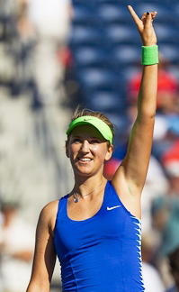
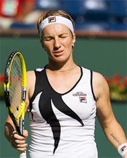
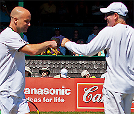
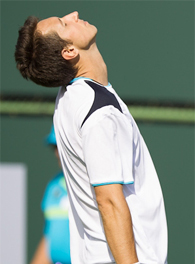

Replacing Confidence with Emotional Discipline¶
By Allen Fox, Ph.D.¶

Confidence is a key to reaching your potential.
In the last article we looked at some ways to increase confidence (link). Increasing your confidence over time should be a part of developing your potential as a tennis player. The idea is to change how you feel about your game and create more self-belief when you are on the court. (link.)
But in this article I want to outline another approach for winning matches when your confidence is reduced. This is to replace confidence with emotional discipline. Doing this often allows you to achieve the same things as if you were actually confident, just in a different way,
There are times in every player's career when he has less or even much less confidence than at his best. There is also a natural tendency, when a player is lacking confidence, to become excessively emotional in competition.
Fears and uncertainties run rampant and players are particularly susceptible to choking, anger, discouragement, or excuse making. When this happens, of course, the cycle of playing poorly is perpetuated.
When a player is in this mindset, these negative responses can be consciously dampened down with above normal discipline. This approach can allow players to remain competitive and avoid utterly destroying themselves when they are performing below par. The result in turn can actually be a win or a series of wins that gets confidence flowing in the right direction again.
How do you discipline your play? Play more consistently and conservatively than you would if you were at your best. Resist the urge to get creative with your shot selection.

How can you escape from a negative mind set?
Hit more crosscourts and try fewer down the line winners. Be determined to work harder and be willing to do more running than usual. Grind more than you normally would.
[All this takes tremendous mental effort. You can't relax your concentration even for a moment. But you can do it if you are sufficiently determined.]
Getting the first win with this approach may require some assistance from your opponent in the form a few extra mistakes. But the fact is that concentrating hard and forces your opponent to stay out on court longer often creates this outcome.
The bottom line is that disciplining yourself to play in this fashion no matter how you really feel increases the odds of you getting the win or wins you need to reverse the losing cycle. Ironcially this can lead to a recover of the confidence you have previously lost.

Disciplining yourself can produce results no matter how you really feel inside.
Changing Coaches
Changing coaches can also break a down confidence cycle. A new coach often automatically increases a player's confidence. This is true regardless of whether the coach is actually superior to the coach he replaces.
Every coach has only so much information. Once a coach has worked with a player for a reasonable period of time, the player will have learned most of what the coach has to offer.
Things can eventually get tired and repetitive. In these circumstances new information coming from a fresh angle can be helpful.
Equally or even more important is the fact that the new voice can have a positive psychological impact. A new coach may lead a struggling player to hope in that there is a bit of \"magic\" advice in the offing that can break the negative cycle. The belief that this new information can help functions somewhat like a placebo effect.
Dumbo and the Magic Feather
I compare it to the story of Dumbo and the magic feather. The mouse gives Dumbo a feather and tells him it is magic, and whenever he holds it in his trunk he will be able to fly. So Dumbo flaps his huge ears and, believing in the magical powers of the feather, does, in fact, fly.
A new coach can help you fly with a magic feather.
While flying Dumbo drops the feather, starts to fall, and the mouse (who is perched in his hat) tells him that the feather never really had magical powers and that Dumbo was himself able to fly all along. And so Dumbo flies without the feather.
On the pro tour a new coach may, in addition to providing new technical insights, initially serve as a magic feather for a stagnant player. Unlike Dumbo, however, when the player finds out that the coach has no magic he may not continue flying. Instead he may look yet again for a new coach, particularly if he has already absorbed most of the information his new coach had to provide.
Brad Gilbert was able to amp up the careers of Andre Agassi (who was faltering) and Andy Roddick (who had not yet arrived) such that both won major slam titles shortly after he began coaching them.
Part of the reason is that Gilbert is a strategic genius, but as important or more important was that he gave his players renewed hope and motivation. Not only were they hearing a new voice and new technical information, but Gilbert also acted, at least in the beginning, as a \"magic feather.\"


With Brad Gilbert, Agassi and Roddick both quickly won a Slam.
He provided effective tools. But for Agassi and Roddick knowing they were in the hands of a strategic wizard who was generally known as the smartest player in recent memory increased their confidence in him, and eventually, in themselves as well. Since Brad's methods worked, both players got the initial wins they needed to enhance their confidence, and the process continued from there. But as is usually the case over time, some of the magic eventually dissipated.
Having absorbed much of Gilbert's wisdom, both players eventually left him for other coaches. (They parted on friendly terms with great mutual respect, as was proper with all such good people.)

Time can be therapeutic when you feel like this.
Time
Another solution to loss of confidence can simply be time. Time can be therapeutic.
Time itself can sometimes aid in breaking out of a slump. This is because the decrease in confidence caused by a loss naturally dissipates over time.
For this reason, it can be helpful, if one is slumping badly, to take a short break from competition. You can, for a week or so, lay off tennis entirely or just hit and work on your strokes.
When you return to competition, start out against weaker opponents, a tactic I have previously suggested. link This way you can gradually rebuild your confidence as a prelude to pitting yourself against your tougher opponents.
In the long run there are no miracle treatments for transforming yourself as a player or a person. Ultimately confidence has to come from your experience on the court, and how you control yourself, and how you react to what happens.
You won't develop long term confidence from a new racket or a different set of strings. You develop it from learning about yourself and working to develop your inner characteristics as a player.
Read More From Allen!
Visit him at www.allenfoxtennis.net
|  | Tennis is mentally the most difficult sport due to it's personal nature which makes winning and losing feel more |
| important than they are. In this new book, Allen offers his proven solutions to problems such as choking, reducing | |
| stress, finishing matches, and developing confidence. Based on a life time of high level play and coaching success, | |
| it's a must for all competitive players. | |
| [ to | |
| Order](http://www.amazon.com/Tennis-Winning-Mental-Allen-Fox/dp/0615407765/ref=sr_1_1?ie=UTF8&qid=1336083459&sr=8-1). |
|  | eminently preferable to losing. In his new book, The |
| Winner's Mind, Allen lays out an original step-by-step | |
| plan for succeeding at any of life's endeavors, based on | |
| his first hand and very personal observations of the | |
| careers of both world-class tennis players and successful | |
| businessman. The bottom line is that even if you are not a | |
| born champion--and only a tiny percentage of us are--you | |
| can still use the success strategies of champions to tilt | |
| the odds in your favor. Writing with brutal honesty and dry | |
| humor, Fox lays out the common mental characteristics of | |
| winners in sports and in life. He explains the critical | |
| role of intellect over emotion. He analyzes the struggle | |
| between ambition and fear and the insidious and pervasive | |
| fear of failure that undermines so many of us. He then | |
| outline how to confront and overcome these fears in your | |
| life and career, even when they are initially subconscious. | |
| Must reading from one of the great thinkers in tennis, and | |
| a Renaissance Man in life. [ to | |
| Order](http://www.tennis-warehouse.com/descpage-MIND.html). | |
| To purchase this book you can also send a check for \$17.95 | |
| to Allen Fox, 1120 Inverness Place, San Luis Obispo, CA. | |
| 93401. The price includes shipping. |
|  | insightful analysts in modern tennis. A top 10 |
| American player from the glory days before Open | |
| tennis, Fox played many of the legendary greats, among | |
| them Roy Emerson, Rod Laver, Stan Smith, and Arthur | |
| Ashe. At Pepperdine he developed the men's tennis | |
| program into an elite contender for national titles, | |
| and gave Brad Gilbert the insights that became the | |
| foundation for \"Winning Ugly\". His book Think to Win | |
| is a modern classic. He has also starred in a series | |
| of acclaimed videos, including Pro Secrets of Match | |
| Play and Allen Fox's Ultimate Tennis Lesson. | |